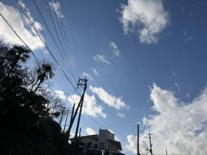

うるがいの話 ある日
最新: 新聞の配達【うるがいの話 ある日】とは 一日だけのプログです
『うるがいの話』の最新一日だけのプログで、通信料が少なく経済的だ。カニの画像をクリックすると全ての日付が載る『うるがいの話』サイトを表示します
|
|
【うるがいの話】 うるがい(ｳﾙｶﾞｲ urugai)とは、『もずくがに』の名前でとても大きくなります。 |
|---|---|
|
|
【カミマヤーの話】 猫のことを方言でマヤーといいます。カミマヤー（kamimayaa）とは、神の猫のことです。 |
|
【たながぁの音楽】 たながぁ（ﾀﾅｶﾞｰ tanagaa）とは手長えびのことで、何種類かあり大きいのは車 エビぐらいになります。 |

|
【ぶながぁの話】 ぶながぁ(ﾌﾞﾅｶﾞｰ bunagaa)とは、赤い髪の毛、赤い身体、そして身長は１ｍ２０ｃｍ ぐらい、川の蟹を食べているの目撃された。場所は沖縄県国頭郡大宜味村のと ある村僕の隣近所に住んでいる爺さんから、聞いた話です。 |
|
|
【ギーマの話】 ギーマ(giima)とは、山原の里山に咲くスズランに似た、 花を付けます。実は食べられます、 気が付くと口の周りが紫になっています。 |
2026年01月06日 (火）新聞の配達
15:30

大晦日の新聞配達が遅いので、夜７時半にまだ届いていないと電
話する。『もう少しで配られると思います、住所は・・、あ、ナ
ガヨシさん所ね、余り遅いならまた電話ください』、夜の９時半
玄関をノックする音が、玄関を開けると新聞があった、配達人さ
んに声をかけようとするお隣さんへ新聞を配達している最中だっ
た。フーン、お隣近所で３件は新聞取っているのかとその時分か
った。新聞配達って大変である、常に配達員募集しているし、と
ころで、今の若い人はとならし、いつまであるのだろう後１０年
か・・・・。ネットで調べた
AIから (紙の新聞の現状と未来)
このペースで減少が続けば、計算上、早ければ２０３０年代には
日本から紙の新聞がなくなる可能性があります。
ある予測では、１３年後には紙の新聞が消滅するとも言われてい
ます。
無料でタイムスのメルマガを購読し、昨年メルマガの購読を停止
したが、正月になった途端再開した。停止にするには、会員のロ
グインが必要だが、脱退したし・・・、エーイ、受信拒否に設定
した。
【独自】沖縄県警の警官「恋した」 捜査対象の女性に私的接触
今日の新聞で目についた記事です、フムフム、一目惚れか分かる
けど・・、昼過ぎにはこの記事もネットに出ていた。だから、新
聞が必要と思わなくなるだべ。
山陰信販株式会社は、2024年7月23日付けで「株式会社トワライ
ズ」に社名を変更しました。
島根・鳥取で最大震度５強の地震がありました、１９８３年の冬
山陰米子市へ、山陰信販のシステム商談にヨシダさん、カワバタ
さんと行きました。夜は、営業の費用持ちで山陰の海産物の鍋を
頂きました。そのとき、はじめてホヤという海産物を頂きました
。そして、その後、島根の宍道湖の近くにあるヨシダさんの実家
に泊まりました、お酒のナポレオンも頂きました。そして、飛行
機で大阪梅田へ行き、京都にある寮に帰りました。地震で４０年
以上も前の事を思い出しました。あの信販会社は、まだあるのだ
ろうかとフト。